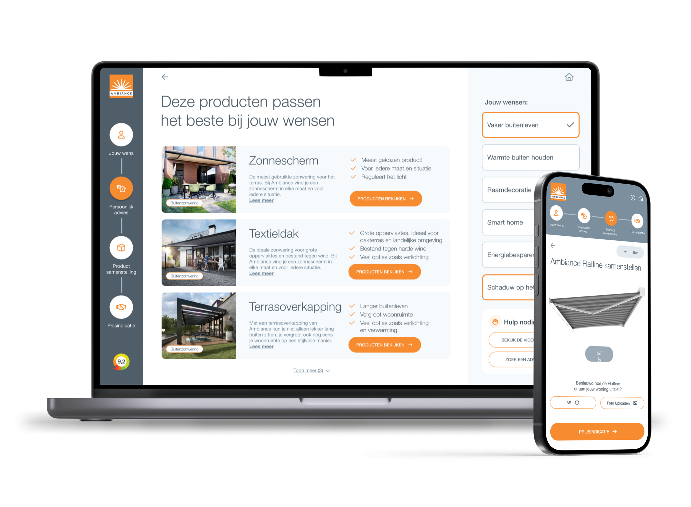

Een keuzehulp die twijfel over zonwering omzet in een offerteaanvraag
Ambiance verkoopt zonwering via 41 vestigingen in heel Nederland. De vraag was een online configurator; het ontwerp werd een begeleide keuzehulp die klanten van hun woonprobleem naar een passende offerteaanvraag brengt.
RolLead UX Designer, end-to-end
PeriodeCirca een jaar
TeamStakeholders Ambiance en een klein devteam
GevalideerdGetest met 12 consumenten
In het kort
Probleem
Zonwering is een dure, situatie-afhankelijke aankoop. Klanten weten niet welk type bij hun woning past en durven de keuze niet zelfstandig te maken.
Aanpak
Gebruikersonderzoek en benchmark, vertaald naar een begeleide funnel: van woonwens via persoonlijk advies en samenstelling naar visualisatie en prijsindicatie.
Uitkomst
Prototype gevalideerd met 12 consumenten. Het ontwerp gaf Ambiance een onderbouwd beeld van hoe het online keuzeproces in de customer journey moet werken.
De keuzehulp op desktop en mobiel: links de vraag waar je een oplossing voor zoekt, rechts het samenstellen van een Flatline-zonnescherm.
De vraag was een configurator
Het assortiment van Ambiance is groot en sterk afhankelijk van de persoonlijke situatie: type gevel, ligging, woonwens en budget. Online konden klanten producten bekijken, maar het echte keuzewerk gebeurde pas in de winkel, met adviesdruk voor de vestigingen als gevolg.
De opdracht begon als productconfigurator. Uit het onderzoek bleek dat het echte probleem eerder in de klantreis zat: koopzekerheid. Wie niet weet welke oplossing bij zijn probleem past, gaat niet configureren. Het doel werd daarom een keuzeproces dat begeleidt tot en met de offerteaanvraag.
Wat het onderzoek liet zien
Uit interviews met consumenten en stakeholders, aangevuld met benchmarkonderzoek naar vergelijkbare keuzehulpen, kwamen drie inzichten die het ontwerp hebben bepaald.
Angst voor het eindresultaat
Bij een dure aankoop is de grootste twijfel of het resultaat aan de verwachting voldoet: hoe ziet zo'n zonwering er straks aan mijn gevel uit?
Productkennis ontbreekt
Consumenten kennen de producten en materialen niet en weten daardoor niet welk type het beste bij hun wens past.
Een dure aankoop doe je op een groot scherm
Bij het samenstellen van een grote aankoop pakken gebruikers vrijwel altijd een desktop. Het ontwerp is daarom desktop-first, met een volwaardige mobiele variant.
Drie keuzes die het ontwerp bepaalden
1. Vragen naar het probleem, niet naar het product
De keuzehulp opent niet met het assortiment, maar met de vraag waar je een oplossing voor zoekt: vaker buiten leven, warmte buiten houden, schaduw op het terras. Het advies vertaalt die wens naar passende producttypen.
Afweging: wie al precies weet wat hij wil, legt een langere route af. Dat is bewust; de doelgroep met twijfel is groter dan de doelgroep met kennis.
2. Zien vóór beslissen
De kernangst, niet weten hoe het eruit komt te zien, wordt in de flow zelf weggenomen: met AR en een foto-upload zien klanten het samengestelde product in hun eigen situatie voordat ze een aanvraag doen.
Afweging: AR was technisch de zwaarste feature. Hij is gekozen omdat hij het inzicht met de hoogste impact adresseert, niet omdat het kon.
3. Prijsindicatie als sluitstuk
De funnel eindigt met een prijsindicatie en de offerteaanvraag. Zo weet de klant waar hij aan toe is, en ontvangt de vestiging aanvragen van klanten die al gekozen en gezien hebben, in plaats van oriënterende bezoekers.
De oplossing in vijf stappen
Jouw wensWaar zoek je een oplossing voor?
Persoonlijk adviesProducttypen die bij de wens en situatie passen
SamenstellenMaat, doek en opties per product
VisualisatieHet product in de eigen situatie, via AR of foto
PrijsindicatieDirect inzicht, gevolgd door de offerteaanvraag

De adviesstap: op basis van de gekozen wensen adviseert de keuzehulp zonnescherm, textieldak of terrasoverkapping, met de redenen erbij.
Getest met twaalf consumenten
Het hi-fi prototype is gevalideerd in usability tests met twaalf consumenten. De begeleide opzet deed wat hij moest doen: deelnemers ervoeren overzicht, vertrouwen en zekerheid bij het kiezen, en de visualisatie bleek het moment waarop twijfel omsloeg in een concreet beeld van de aankoop.
De tests bevestigden ook de volgorde van de funnel: eerst advies, dan pas samenstellen. Deelnemers die direct naar producten sprongen, haakten eerder af dan deelnemers die via de wensvragen binnenkwamen.
Hoe het afliep
De keuzehulp is niet ontwikkeld: de bouwkosten pasten niet binnen het budget. Wat er wél ligt, is een gevalideerd ontwerp en een onderbouwd beeld van hoe Ambiance het online keuzeproces in de customer journey kan verbeteren, inclusief de kennis welke stappen de meeste zekerheid opleveren.
De case kreeg bovendien een vervolg buiten Ambiance: hij was voor Winning Proposal de aanleiding om mij als lead designer aan boord te halen.